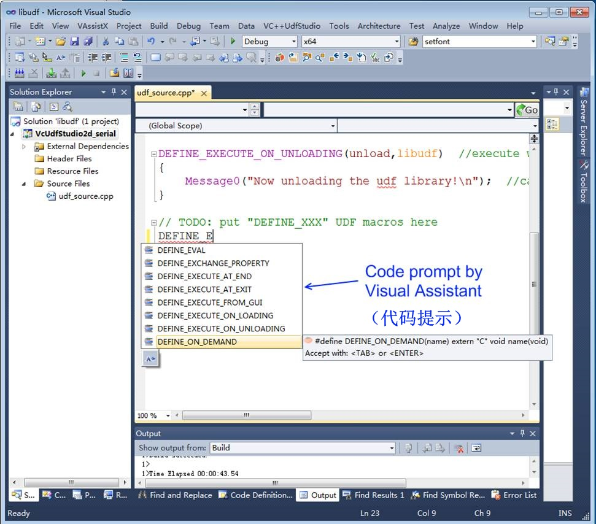

这是什么软件？
语言 

VC++ UDF Studio 是利用Visual Studio集成环境，C++编译器和调试器的技术优势，能在Visual Studio中一体化编辑、编译、加载、卸载和调试FLUENT UDF源码。它通过嵌入菜单或工具栏的形式控制FLUENT和Visual Studio， 协调两者宛如一个软件一样工作。此外， 本工具还可以拓展辨认C++语言和Win32 API/MFC函数，使UDF功能更加强大。例如，您可借助本工具调用Windows socket以实现Fluent和matlab的耦合（博客实例）。
从现在起，调试UDF将像调试常规C/C++程序一样容易，可以单步跟踪程序，直接观察鼠标停留处中间变量的值。还不快来试试？
新闻
2021年2月: 版本分开为学术版和企业版，企业版具有更多增强功能
2020年5月: 创建学术版VIP腾讯QQ群（群号：288943652，仅限学术版注册用户）
2018年11月: 创建腾讯QQ群（群号：817525240）。
2018年6月: 创建VC++ Udf Studio主页（https://vcUdfStudio.bitbucket.io）。
历史
2021年3月: 2021R1 SP1
- 修正Visual Studio报告“OnBuildBegin 冲突”和“无法打开preprocessing.lib文件”的bug
- 修正WinXP下“浏览文件夹”按钮无法正确工作的bug
- 允许试用版中采用UDF编程方式驱动Fluent迭代一次（仅企业版）
- 修正第三方头文件和库文件目录设置对话框里中文目录名无法保存的bug（仅企业版）
2021年2月: 2021R1
- 支持到Fluent6.3 ~ Fluent 2021R1
- 加入双精度勾选框，代替2ddp，3ddp
- 增加SuperUdfExtension拓展函数库（根据zone 名字获取对应ID，UDF中驱动fluent迭代，UDF中驱动fluent执行TUI/scheme命令，Fluent中添加用户菜单等，其中某些功能仅企业版提供）
- 添加第三方库头文件和库文件目录设置（仅企业版）
- 修正Intellisense报告无法打开源文件“ud_io1.h”的bug
- 32 位windows下卸载本软件后注册信息残留的bug
- 编译前检测其它进程是否占用当前UDF库，当被占用时可强制杀死占用UDF库的进程。
- 并行编译前旧版本只检测host库是否加载的bug，现在对host和node库均进行检测。如果已经加载则报错，停止编译。
2020年8月: 2020R2
- 支持到Fluent6.3 ~ Fluent 2020R2
- 对于Fluent17.0或更高版本，如果用户在Fluent中手动卸载VC++UdfStudio菜单，旧版本无法释放插件占用内存的bug，本版本予以修正
- 修正用户信息文件"user.ini"中HardWare ID字段可能为空白的bug
- 不再显示由于加入"sg.h" 或 "geom_info.h"头文件后产生的C4190警告（类似 'XXX' has C-linkage specified, but returns UDT 'XXX' which is incompatible with C）
2020年7月: 2020R1 SP1
- VS中的菜单添加不同按钮组的分割符
- 非Unicode程序设置中如果选择非中文语言导致的乱码问题
- 卸载本程序后VS报告“无法找到插件”的bug （即清理干净卸载后的残留）
- 首次启动时根据Windows语言自动选择界面语言
- 有时候硬件信息无法对应到Windows系统盘的bug
- 源码中存在DEFINE_RW_FILE宏的情况下，有时候无法调用Fluent内置文件操作函数（例如fluent_fopen, fluent_fprintf等）的bug
- 示例源代码载入fluent时产生的乱码问题
2020年2月: 2020R1中英文双语版
- 支持英文和中文界面语言
- 美化对话框字体
2020年2月: 2020R1版本
- 支持到Fluent6.3 ~ Fluent 2020R1
- 存在udf_source.cpp源码文件时时直接打开，不再询问是否覆盖，不存在时则自动建立示例源码文件
- 修正win10下先退出Fluent的时候VS会卡死的bug（现在如果fluent关闭则直接关闭对应VS，不出现提示对话框）
- VS打开情况下最大化Fluent窗口再读取另一个新case时，VS中弹出的确认保存源码对话框被fluent窗口遮挡，导致见不到弹出警告对话框，用户误以为卡死，现已经修正此bug，保存源码对话框会显示在最前端。
- 修正“win10下, VS中如果有模态对话框打开状态下（比如选项等），此时关闭fluent或读写新case或TUI命令卸载插件菜单，对应VS卡死”的bug
- 修正使用UDF_EXPORT关键字引起fluent libudf库内函数时候无法找到函数指针的bug，例如真实气体模型Real Gas Model中使用到UDF_EXPORT，开启真实气体模型时报告couldn't get real_gas_fcns
- Fluent18.0以及更高版本fluent中遗漏WIN64定义，因而可能产生的bug
- 修正udf.h中遗漏version.h头文件的bug，该bug会导致UDF源码中无法调用Inquire_Fluent_Build_Time，Inquire_Release等函数
- 修正启动器启动fluent时因没有license导致fluent闪退无任何提示的bug
- 修正“偶尔有时启动fluent嵌入菜单显示出不来”的bug
- 完善功能，导入第三方格式的网格或另存为*.cas，*.cas.gz，*.cas.h5都能自动识别新导入或存储的目录，与VS当前针对的cas目录不同时自动关闭VS
- Fluent工作目录随时与打开/存储/导入的cas目录同步
- 修正“关闭串行版Fluent12.1~14.5时无法自动关闭对应的Visual Studio”的bug。
2019年11月: 2019R3版本
- 支持到Fluent6.3 ~ Fluent 2019R3
- 修正Fluent 12.0~16.2中，如果启动Visual Studio之前某些编辑框如重力设置编辑框处于打开状态，UDF库无法加载或卸载的bug
- 修正并行版本中，如果Fluent case文件夹含“=”符号时node库无法编译成功的bug
- 启动器下拉框中的19.3，19.4，19.5版本号分别更改为等价的2019R1, 2019R2, 2019R3
- 修改导入非Fluent网格格式后启动Visual Studio仍出现”请先读取case“的提示
- 如果当前Fluent case另存到其它目录时，UDF源码文件夹”source“和库目录”libudf“位置会自动相应更新，但这只针对Fluent版本19.0以后版本。对于19.0以前的版本尚无法自动更新，属于已知bug（因此，对于19.0以前的Fluent版本，一旦读取一个Fluent case请不要再另存到其它位置）。
2019年9月: 2019R2 Service Pack 1 版本
- 修正调试时Intellisense找不到ud_io1.h的错误
- Debug模式下关闭Fluent或卸载VC++ Udf Studio菜单时，无法自动关闭对应Visual Studio实例的bug（旧版本中可能卡死或非法操作）
- 源码中无须再将#include "udf.h"放在extern "C"中，同时无须在开头添加#include "stdafx.h"，UDF代码完全和常规udf代码相同
- 修正VS2012, 2013下有的用户无法加载VC++ Udf Studio菜单的bug
- 修正并行版本中调整核心数目时版本自动跳回到2d的bug
- 修正case放在磁盘根目录时产生错误警告的bug
- 增强自动查找VS和Fluent安装目录的能力
- 使工作目录与打开case的目录随时同步，方便用户打开或保存文件
- 如果用户选择覆盖源代码，则添加备份文件，防止用户覆盖后反悔而需要恢复
- debug模式下pdb文件丢失或Release模式中若用户执行调试命令则显示警告，禁止调试
- VS2013中去掉编译时"MBCS support in MFC is deprecated"和"function or variable may be unsafe"的警告
- 将某些VS自带的不应使用的菜单项和按钮变灰，尽可能防止误操作。
2019年6月: 2019R2版本
- 支持到Fluent6.3 ~ Fluent 2019R2
- 移除FLUENT启动时以红字显示"Error: sopenoutputfile: unable to open file for output" 的错误。
2019年5月: 19.2 版本
- 支持到Fluent6.3 ~ Fluent 19.2
- 用户注册信息由剪贴板改为写入文件，防止某些邮件系统中剪贴板粘贴到邮件时可能自动插入空格而导致返回的注册码错误。
2018年9月: 18.2 Service Pack 1 版本
- 修正64位Win10下启动时出现“Some Error occurs. Restart may work!”错误警告
- 不再依赖于环境变量“FLUENT_INC”，安装多版本Fluent情况下，用户可以直接在启动器中自由指定要启动的版本，且会自动记录已有版本信息，供下次使用。
2018年6月: 18.2版本
2018年3月: 1.0 SP2版本 (仅中国国内)
2018年2月: 1.0 SP1版本 (仅中国国内)
2017年11月: 1.0 beta版本 (仅中国国内)
支持的系统
Windows: WinXP ~ Win10 (32bit & 64bit)专业或企业版
Visual Studio: VS2008SP1 ~ VS2013专业或旗舰版
Fluent: Fluent6.3 ~ Fluent2021R1
特征
功能 |
学术版 |
企业版 |
||
试用版 |
注册版 |
试用版 |
注册版 |
|
编译调试（串行，单精度） |
最多2个宏 |
宏数不限 |
最多2个宏 |
宏数不限 |
编译调试（串行，双精度） |
||||
编译调试（并行，单/双精度） |
||||
调用C++/Win32 API/MFC函数 |
||||
根据zone名字获取id号 |
||||
调用第三方LIB库 |
||||
设置第三方函数库目录 |
最多1个目录 |
目录数不限 |
||
Fluent中加入用户菜单 |
最多1个子菜单 |
子菜单数目不限 |
||
UDF中驱动fluent迭代 |
最多1次迭代 |
迭代次数不限 |
||
UDF中调用Scheme/TUI命令 |
||||
与Matlab耦合迭代计算 |
开发中 |
开发中 |
||
贴士
强烈推荐安装“Visual assistant” (www. wholetomato.com) 插件。该插件具有很多扩展功能，例如代码自动补全（对udf宏提示很有用），括号匹配，用户自定义关键词颜色等等。
